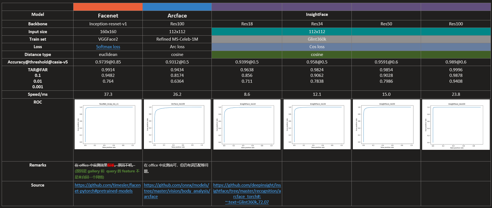

本文主要记录在人脸识别任务的部署过程中的一些过程。
一般来说，人脸识别主要分为三个过程：
- 人脸检测 (Face Detection)
- 特征点检测 (Landmark Detection) + 人脸对齐 (Face alignment)
- 特征提取 (Feature Extraction)
其中，特征点检测 步骤是可以省略的。但是 特征点检测 + 人脸对齐 (Face Alignment) 可以提高特征提取部分的效果。因此，在实际的部署当中，还是采用了 特征点检测 + 人脸对齐 的操作。
在本次的任务中，重点关注 特征提取 部分的模型。
人脸检测
常用的人脸检测模型有 S3FD, BlazeFace, UltraFace 等等。由于在实际的部署任务对检测的速度有一定的要求，因此最终我们选择了 UltraFace 作为人脸检测模型。而 BlazeFace 作为一款为手机前置摄像头设计的网络，其要求人脸至少要占据整个画面的 20%，这也限制了人脸的检测距离，从而落选。S3FD 没有实际上手研究过，不过从网络上的文章来看，其检测效果应该是很好的，但是速度不够快，因此也落选。
最后选择的是：UltraFace, input size: 320x240. 60fps@FP32@TopsInference. FP16 fail
人脸特征点检测
人脸的特征点检测是指检测出预定义的人脸特征点，如 嘴角，眼角，眉毛，鼻子等。常见的预定义人脸特征点有 5 点和 68 点的。
人脸特征点检测模型我是直接使用的 FAN 网络，没有尝试其他的 landmark detection 网络。因为从测试效果来看，这个网络以及作者提供的 pretrain 模型的效果还是可以的。
最后选择的 FAN 网络：16fps@FP16@TopsInference. FP32 fail.
人脸对齐 (Face Alignment)
由于实际检测到的人脸不一定是正的，因此，我们可以根据检测得到的人脸特征点，以及预定义的特征点，进行人脸对齐。
有多种不同的方法可以进行人脸对齐，如 仿射变换 (Affine Transform)，以及 相似变换，透视变换. 由于时间原因，我没有尝试相似变换和透视变换，而是采用了仿射变换。
人脸过滤
在测试过程中，我是使用 IP 摄像头进行实时视频中的人脸识别的。因此，不可避免地会检测出很多 “条件不太好” 的人脸。如 低头，仰头，侧脸 等等。为了保证人脸识别的准确率，因此需要对人脸的姿态进行一定的限制，将很多姿态较差，不适合进行识别的人脸过滤掉。
在应用中，我在实际对 landmarks 进行 align 的前后都进行了过滤。
Landmark Align 前
- 68 个 landmark 点的最低 score 必须大于某个阈值，比如 0.3.
- 右脸颊最右侧的点应该在左脸颊最左侧点的左边（左右是实际被拍的人的左右）。这一条件是防止人脸歪得太厉害。像这样 →
Landmark align 后
- 右脸颊最右侧的点应该在左脸颊最左侧点的左边。
- 嘴唇上所有点必须在所有眼睛的点的下方。
- 左右脸颊最上方的点到鼻根这个点的水平距离比值必须 0.5~2 倍内。防止人脸转过去太厉害，类似侧脸。
特征提取网络
特征提取网络的作用是对检测出的人脸区域，[在经过人脸对齐后], 使用一个分类网络进行特征提取，提取出的特征向量作为这个人脸的表征。理想情况下，同一人脸的不同图像产生的特征向量的距离较近，不同人脸的图像的特征向量距离较远。这也是所谓的，类内距离小，类间距离大。
在实际的部署任务中，尝试了多种不同的 backbone + loss, 以及在不同的数据集上训练得到的网络。并对其进行了评测。我测试过的模型主要有 FaceNet, ArcFace, InsightFace (res18 - res100).
特征提取网络评估
由于各预训练模型是在不同的数据集上进行训练的，而各公开数据集的大小以及人脸的丰富程度各不相同，因此需要使用统一的数据集对各预训练模型进行评估。
评估数据集选择
为了更接近真实的应用场景，因此我选择了 CASIA-FaceV5 这个数据集进行评测。此数据集为中科院在室内采集的人脸图像，共 500 个人，每人 5 张图像。
评估标准选择
评估标准采用 LFW 数据集的方式。通过生成 pair.txt，其中一半行是同一个人的两张图像，另一半行是不同人的图像。使用不同的 threshold，对不同的模型进行测试，计算出它们的 accuracy, TAR@FAR 等参数。在 CASIA-FaceV5 这个数据集中，共有 5000 对相同 id 的图像，5000 对不同 id 的图像。
本次评测主要考察的指标有：
- TAR = TPR
- FAR = FPR
- ROC 曲线，横轴 FPR，纵轴 TAR
- TAR@FAR: 就是 ROC 曲线上找到 FPR=0.1/0.01/0.001 时，TPR 的值
参考
各模型的评估结果记录在下表

从表中的结果可以看出，使用 Glint360k 数据集训练的，backbone 为 res100 的 InsightFace 效果最好，速度相较 ArcFace 和 FaceNet 也更快。因此，在后续的部署中，将会使用 InsightFace(Res100) 作为特征提取网络。
人脸检索数据库
完成了算法部分，即人脸特征向量提取后，就该考虑实际部署中的人脸检索问题。由于实际生产环境中，人脸库可能有大量人脸向量。如果进行 1:N 的暴力检索的话，需要耗费大量的内存资源，且检索速度较慢。因此，我们需要考虑采用专用的向量数据库来存储人脸向量，并提高检索效率，降低资源消耗。
目前主流的向量数据库有 Milvus, Faiss 等。经过比较，决定采用 Milvus 作为人脸检索数据库。根据 Milvus 官网提供的安装方式，最后采用 docker-compose 的方式来启动 Milvus server. 在 Milvus 中，主要有有两个字段，分别是 id 和 vector. 每次检索时，会返回符合条件的 id. 此外，还使用了 redis 数据库与 Milvus 进行关联。redis 中存储了每个人脸的 id 及其对应的图像地址。可以根据 Milvus 返回的 id 从 redis 中找到其存储路径，并进行图片展示。除了存储人脸图像地址，在实际部署环境中，还可能会存储人员的其他信息属性。因此，使用一个额外的数据库与 Milvus 进行关联是有必要的。
Milvus 安装及启动
由于 docker-compose 是通过 yml 配置文件的方式进行启动的，因此，从官网下载到提供的 docker-compose.yml 后，使用 docker-compose -f path/to/yaml up -d 命令可以在后台启动 Milvus 服务。由于在部署中也使用到了 redis, 因此在官方的 yml 文件中添加 redis 有关的配置，从而将 redis 服务一并启动。由于 redis 会将数据文件存储到磁盘上，因此，需要在 docker 中对 redis 存储数据文件的路径进行映射，否则每次重启 redis 后，数据就会消失。根据官方文档，redis 的数据文件是存储在 /data 目录下的，因此使用 path/on/host:/data 的方式对 docker 中的路径进行映射。
Milvus 分区功能
利用 Milvus 分区功能，将具有相同属性的向量归为同一个分区，并将这些属性标签用一个字符串（例如：
'2019-11-22/female/False'）代替作为该分区的标签（Partition_tag）。在进行检索时，将过滤条件按相应的规则转化为字符串在对应的一个或多个分区里查找相似向量。在选择分区时，支持用正则表达式匹配相对应的分区。
索引类型选择
在 Milvus 中，可以通过选择不同的索引类型来降低内存的消耗，以及提升检索的效率。常见的索引类型有如下几种：
-
FLAT：
- 优点：
- 100％查询召回率
- 无需训练数据，无需配置任何系统参数，也不会占用额外的磁盘空间
- 缺点：查询速度慢
- 优点：
-
IVFFLAT：查询速度与召回率之间的权衡由参数 nprobe 来控制。nprobe 越大，召回率越高，但查询时间越长。
- 优点：查询召回率高
- 缺点：占用空间大
-
IVFSQ8：
- 优点：查询速度快，资源占用仅为 IVFFLAT 的 1/4~1/3
- 缺点：查询召回率比 IVFFLAT 低
-
IVFSQ8H：需要 CPU 和 GPU 协同工作，因此必须安装支持 GPU 的 Milvus。
- 优点：同 IVFSQ8，且查询性能优于 IVFSQ8
- 缺点：同 IVFSQ8